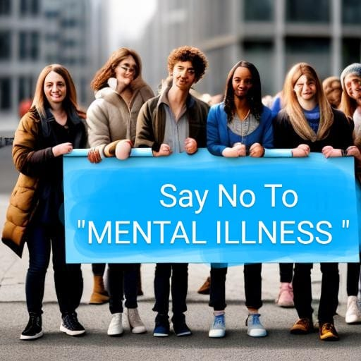

EFFECTS
-Unhappiness and decreased enjoyment of life
-Family conflicts
-Relationship difficulties
-Social isolation
-Problems with tobacco, alcohol and other drugs
-Missed work or school, or other problems related to work or school
-Legal and financial problems
-Poverty and homelessness
-Self-harm and harm to others, including suicide or homicide
-Weakened immune system, so your body has a hard time resisting infections
-Heart disease and other medical conditions
Example for mental harassment:
Tanya grew up in a Mumbai suburb, like any normal teenager.
Unknown to her, a classmate from a previous school had started collecting information and pictures of her since they were 12. The information was then used to make a fake Facebook page, and was shown as if Tanya had posted them herself. Tanya had read about cyber bullying, but had never expected herself to be a victim. She found out about the fake page only through her friends.
Even though the bullying seemed benign in the beginning, soon schoolmates started sending her crude messages and she became isolated from her friends circle. She withdrew to herself, rarely going out, and became depressed. The bullying then got so bad that she had to go for counseling and change schools to start afresh.
Having grown up around gadgets, children rely heavily on them to carry out everyday tasks.They also form their social persona around social media and depend on these websites to measure their acceptance by their peers.
AWARENESS

- Acknowledge that you have a social media addiction. Self-awareness is the first step towards recovery.
- Define specific goals for reducing your social media use. These goals could include limiting daily screen time or designating specific times for checking social media.
- Use built-in screen time tracking features on your phone or install apps that track your social media usage. This will give you insights into how much time you're spending on social media.
- Establish a daily or weekly schedule for checking social media. Stick to these designated times and avoid mindless scrolling in between.
- Turn off non-essential notifications for social media apps to reduce the constant urge to check your phone.
- Unfollow or mute accounts that trigger negative emotions or fuel your addiction. Curate your feed to be more positive and meaningful.
- Fill the time you used to spend on social media with productive or enjoyable activities like reading, exercising, or pursuing a hobby.
- Use timers or app features that allow you to set daily time limits for social media use. When the time is up, close the app.
- Share your goals with a friend or family member who can help hold you accountable for your social media use.
- Consider temporarily deleting social media apps from your phone to break the habit. You can still access them via a web browser if necessary.
- Install website blockers or productivity apps that restrict access to social media sites during specific hours.
- Learn mindfulness techniques to become more aware of your impulses and cravings. This can help you resist the urge to check social media mindlessly.
- Reward yourself when you meet your goals. Celebrate your achievements with a small treat or by doing something you enjoy.
- If your addiction is severe, consider seeking support from a therapist or counselor who specializes in addiction and digital well-being.
- Breaking an addiction takes time and effort. Be patient with yourself, and if you slip up, don't be too hard on yourself. Start again and keep working towards your goals.
HEALTH PROGRAMS
- Engage in individual therapy with a licensed mental health professional. Various therapeutic approaches, such as cognitive-behavioral therapy (CBT), dialectical behavior therapy (DBT), and mindfulness-based therapy, can be effective for different mental health conditions.
- If prescribed by a psychiatrist, take medications as directed. Medications can be helpful for managing symptoms of conditions like depression, anxiety, bipolar disorder, and schizophrenia.
- Join local or online support groups specific to your mental health condition. Connecting with others who share similar experiences can provide valuable emotional support and coping strategies.
- Adopt a healthy lifestyle that includes regular exercise, a balanced diet, and adequate sleep. Physical well-being is closely connected to mental health.
- Practice mindfulness and meditation techniques to reduce stress, improve emotional regulation, and enhance overall mental well-being.
- Learn stress-reduction techniques such as deep breathing, progressive muscle relaxation, and yoga to manage stress and anxiety.
- Keep a journal to express your thoughts and emotions. Journaling can help you gain insight into your feelings and track your progress.
- Engage in creative activities like painting, drawing, writing, or music as a means of self-expression and stress relief.
- Improve time management skills to reduce stress and create a sense of control in your daily life. Organize tasks and prioritize self-care.
- Maintain and strengthen your relationships with friends and family members. Social support is crucial for mental health recovery.
- Read self-help books and use online resources that are relevant to your mental health condition. Educating yourself can empower you to better manage your symptoms.
- Break down your long-term goals into smaller, achievable steps. This can boost your self-esteem and motivation.
- Participate in volunteer work or community activities to build a sense of purpose and connection with others.
- Pursue hobbies and interests that bring you joy and satisfaction. Engaging in enjoyable activities can improve your mood and well-being.
- Focus on your career or education goals. Building skills and achieving success in your professional life can boost your self-esteem.
- Stay in touch with your mental health care provider for regular check-ups and adjustments to your treatment plan as needed.
Mental Health and
Wellbeing
Mental health and well-being are as necessary as oxygen for humans to live.
It is very important to learn that mental health should be on one’s priority
list to lead a happy and peaceful life.In spiritual countries like India,
the importance of mental health and well-being has always been cited for ages,
where saints (usually known as sadhus or gurus), used to maintain their
mental health by doing meditation and yoga.